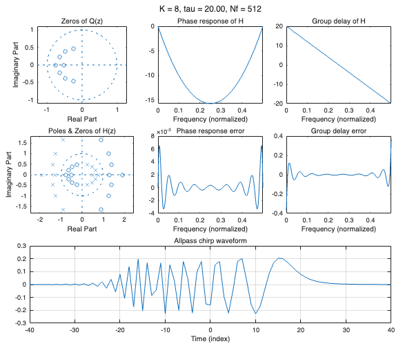

Example of real allpass chirp
Supplement to the paper "Allpass-Based Chirp Design with Perfect Pulse Compression Property"
Ivan Selesnick October 2024 - June 2026
Contents
Set parameters
clear reset(groot)
All-pass chirp system
% Design transfer function coefficients K = 8; tau = 20; % [3.3*K - 8.5, 3.3*K - 5.1] % recommended range for tau Nf = 512 ; % FFT grid points [apc, target_funs] = real_allpass_chirp(K, tau, Nf);
apc
apc =
struct with fields:
K: 8
tau: 20
Nf: 512
f: [512×1 double]
duration: 40
q: [9×1 double]
Q: [512×1 double]
G: [512×1 double]
G_phase_err: [512×1 double]
g: [0 0 0 0 0 0 0 0 0 0 0 0 0 0 0 0 0 0 … ] (1×801 double)
n: [-400 -399 -398 -397 -396 -395 -394 … ] (1×801 double)
h: [5.8510e-47 -4.4216e-46 1.5890e-45 … ] (1×801 double)
b: [1.0623e-04 -6.6448e-04 0.0017 -0.0017 … ] (1×17 double)
a: [1.0623e-04 6.6448e-04 0.0017 0.0017 … ] (1×17 double)
H: [512×1 double]
H_group_delay: [512×1 double]
H_phase_err: [512×1 double]
H_group_delay_err: [512×1 double]
param_string: 'K = 8, tau = 20.00, Nf = 512'
Ktau_string: 'K = 8, tau = 20.0'
target_funs
target_funs =
struct with fields:
f: [512×1 double]
tau: 20
N: 512
G_phase_ideal: [512×1 double]
G_phase_target: [512×1 double]
G_target: [512×1 double]
G_group_delay_ideal: [512×1 double]
H_phase_ideal: [512×1 double]
H_group_delay_ideal: [512×1 double]
Plots
plot_real_allpass_chirp(apc); print -dpdf -fillpage real_example_01_fig.pdf
